Шаг 1: подготавливаем свиное сердце.
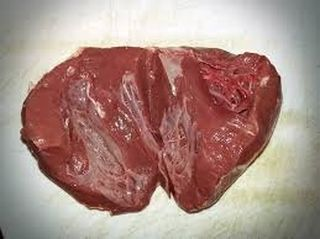
Для приготовления салата лучше всего сердце подготовить заранее. В связи с тем, что мы его будем варить, это займет достаточно много времени. Именно тогда оно станет мягким и сочным. Итак, выкладываем компонент на разделочную доску и с помощью ножа разрезаем на несколько частей. Очищаем кусочки от пленок и после тщательно промываем под проточной водой, чтобы удалить все сгустки крови.
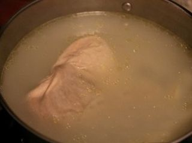
Выкладываем сердце в среднюю кастрюлю и заливаем обычной холодной водой. Ставим емкость на средний огонь и ждем, когда жидкость начнет закипать. Для этого прикрываем кастрюлю крышкой. Внимание: в этот период времени на поверхности воды начнет образовываться пена, обязательно удаляем ее с помощью шумовки. После закипания немного убавляем огонь и варим мясо в течение 10 минут.
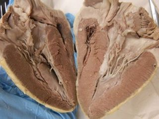
Сразу же после этого перекладываем вилкой кусочки сердца в тарелку, а кипящую воду выливаем в раковину, придерживая кастрюлю с помощью кухонных прихваток. Тщательно промываем емкость под проточной водой и вновь выкладываем сюда компонент. Наполняем кастрюлю обычной холодной жидкостью так, чтобы она полностью покрывала сердце, и ставим обратно на небольшой огонь. После закипания воды варим мясо 1,5 часа, время от времени поворачивая его с помощью вилки из одной стороны на другую, чтобы оно не прилипло к стенкам или ко дну емкости. Важно: в случае повторного появления пены обязательно снимаем ее подручным инвентарем. За 15 минут до приготовления сердца по вкусу солим кипящую воду и тщательно перемешиваем столовой ложкой.
Затем выключаем конфорку, а компонент перекладываем в чистую тарелку и оставляем в стороне остывать до комнатной температуры.
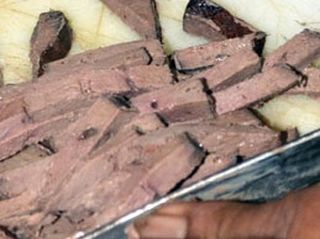
Теперь выкладываем мясо на разделочную доску и нарезаем тонкими полосками или небольшими кусочками. Мелко рубленный компонент перемещаем обратно в тарелку.
Шаг 2: подготавливаем морковь.
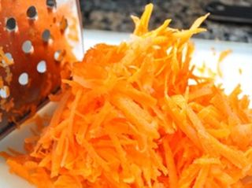
С помощью ножа очищаем морковь от кожуры и тщательно промываем под проточной водой. Воспользовавшись крупной теркой, измельчаем овощ прямо на разделочной доске и после пересыпаем стружку в чистую тарелку.
Шаг 3: подготавливаем репчатый лук.
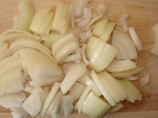
Ножом очищаем лук от шелухи и хорошо промываем под проточной водой. Выкладываем компонент на разделочную доску и измельчаем полукольцами. Внимание: луковицу можно также разрезать на четыре части, а после каждую порубить тонкими полосками. Измельченный компонент перекладываем в свободную тарелку и на время оставляем в стороне.
Шаг 4: подготавливаем яйца.
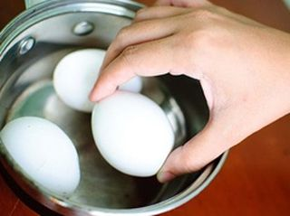
Выкладываем яйца в маленькую кастрюлю и заливаем обычной холодной водой так, чтобы она полностью покрывала компонент. Ставим емкость на средний огонь и прикрываем крышкой. После закипания жидкости варим яйца вкрутую в течение 10 минут.
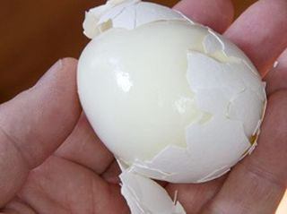
По истечении отведенного времени выключаем конфорку, а кастрюлю с помощью кухонных прихваток ставим в раковину под струю холодной воды. Когда компонент полностью остынет, чистыми руками с легкостью удаляем с него скорлупу.
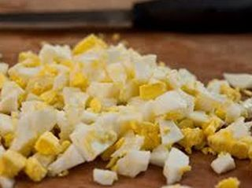
Выкладываем яйца на разделочную доску и с помощью ножа мелко рубим кубиками. Измельченный компонент пересыпаем в чистую тарелку.
Шаг 5: подготавливаем петрушку.
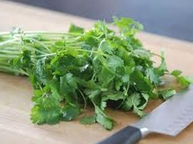
Пару веточек петрушки промываем под проточной водой, отряхиваем от лишней жидкости и выкладываем на разделочную доску. Ножом удаляем стебли, а листики перемещаем в свободное блюдце. Зелень у нас будет для украшения. Внимание: на самом деле можно обойтись и без петрушки. Кому как нравится. Я же добавляю зелень по настроению.
Шаг 6: готовим салат с сердцем.
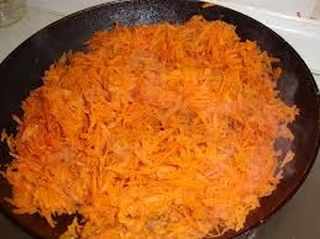
В сковороду наливаем 1/2 часть растительного масла и ставим на сильный огонь. Когда емкость с содержимым хорошо раскалится, аккуратно высыпаем сюда морковную стружку. Время от времени помешивая деревянной лопаткой, обжариваем компонент до золотистого цвета и до мягкого состояния. Сразу же после этого пересыпаем морковь в тарелку, чтобы она быстрее остыла и не занимала место.
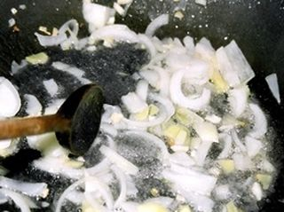
Конфорку не выключаем, а ставим сковороду обратно. Теперь выливаем сюда все оставшееся масло и выкладываем измельченный лук. Точно так же, как морковь, обжариваем этот компонент на сильном огне. После выключаем конфорку, а емкость отставляем в сторону. Внимание: если вы хотите, чтобы лук быстрее остыл, тогда можете пересыпать его с помощью деревянной лопатки в чистую тарелку.
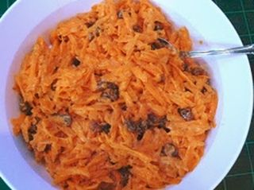
В глубокую салатницу выкладываем измельченные яйца, сердце, остывшие жареные овощи (стараемся оставить стекшее растительное масло в тарелке), а также по вкусу солим и перчим блюдо. С помощью столовой ложки все тщательно перемешиваем до образования однородной массы. Все, салат с сердцем готов!